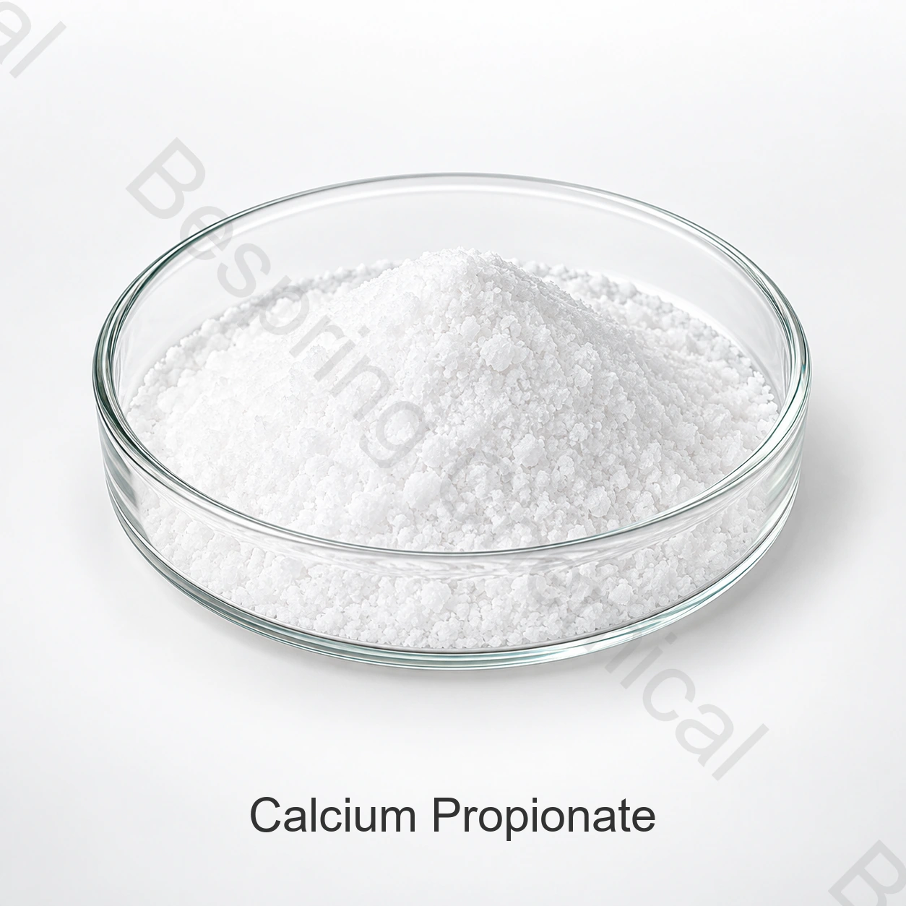

بروبيونات الكالسيوم E282
كالسيوم بروبيونات قياسي بدرجة غذائية للتطبيقات المسموح بها للحفظ. تظهر المواصفة المرجعية ونتائج الاختبارات النموذجية المقدمة لهذه الصفحة أدناه.
أفضل تفصيل للاستفسار: الحدود المطلوبة والسوقمادة حافظة للأغذية · مضادة للعفن ·E282
بروبيونات الكالسيوم هي مادة حافظة للغذاء تُستخدم للمساعدة في السيطرة على نمو العفن والفساد الخيطي، لا سيما في الخبز ومنتجات المخابز. تتوفر خيارات بروبيونات الكالسيوم القياسية E282 بدرجة غذائية، ودرجة FCC ، والمخلوطة لتلبية متطلبات العملاء المختلفة.
أخبرنا ما إذا كنت بحاجة إلى E282 القياسي، FCC أو منتج مختلط، بالإضافة إلى الكمية، التطبيق والوجهة.

نظرة عامة على المنتج
يُعرف بروبيونات الكالسيوم أيضًا باسم بروبيونات الكالسيوم البروبانية، وهو ملح الكالسيوم لحمض البروبيونيك. يتم التعرف عليه على أنه E282 في نظام ترقيم الإضافات الغذائية الأوروبي و INS 282 في مراجع كودكس. يتم توفير المادة الغذائية عادة على شكل بلورات بيضاء، أو مسحوق، أو حبيبات مع عدم وجود رائحة حمض البروبيونيك إلا خفيفة.
في أنظمة الغذاء المناسبة، يساعد البروبيونات المذابة على تثبيط العفن والكائنات الدقيقة المكونة للخيوط. الأداء العملي يعتمد على درجة حموضة المنتج، نشاط الماء، ظروف العملية، الجرعة، التوزيع في التركيبة والكائن المستهدف، لذلك يجب تأكيد الوصفات التجارية من خلال التجارب والمراجعة التنظيمية.
طابق المنتج مع سوقك
'درجة غذائية' ليست معلومات كافية لتقديم عرض سعر دقيق. حدد المواصفات المطلوبة، والسوق المستهدف، والتطبيق حتى تتمكن المبيعات من تأكيد المنتج والوثائق الصحيحة.
قد تستخدم خيارات FCC والكالسيوم بروبيونات المخلوطة مواصفات مختلفة عن جدول E282 القياسي أدناه. اتصل بالمبيعات مع طلبك ومعايير القبول الخاصة بك.
تطبيقات الحفظ
تختلف الفئات المسموح بها ومستويات الاستخدام حسب المتطلبات التنظيمية المحلية. المشتري مسؤول عن التأكد من اللوائح المحلية، ومدى ملاءمة التكوين، ومتطلبات الملصق.
يساعد في التحكم في العفن والفساد الخيطي في الخبز المناسب، واللفائف، والخبز الصغير، وغيرها من منتجات المخابز المخمرة بالخميرة.
يُستخدم في التورتيلا وخبز الفلات والكعك وخليط المخبوزات المختارة بعد التحقق من العملية والحسية.
قد يُستخدم للحفظ في فئات الجبن المسموح بها وفقًا للقواعد السوقية المعمول بها.
خيار للحفظ لأنظمة الحلويات، والطبقات، والمهلبية، والحشوات المؤهلة.
قد يدعم التحكم في الميكروبات في تحضيرات الفواكه المسموح بها والمربيات والهلاميات.
يمكن دمج كالسيوم بروبيونات القياسي أو المختلط في الخلطات الجافة المسبقة للتوزيع والتحكم في الجرعات.
معلومات تقنية
يوضح الجدول حدود المواصفة التجارية ونتائج عينة مرجعية. تمثل النتائج عينة أو مرجع دفعة وليست ضمانًا دائمًا للشحنات المستقبلية. يجب أن يستخدم القبول التعاقدي المواصفة المعتمدة وشهادة التحليل للشحنة.
| معامل الاختبار | وحدة | المواصفة | نتيجة المثال |
|---|---|---|---|
| المحتوى / النقاوة | % | 99.0–100.5 | 99.51 |
| المياه | % | ≤ 4.0 | 3.2 |
| حموضة محلول مائي بنسبة 10 ٪ عند 25°C | — | 7.5–10.5 | 8.0 |
| المعادن الثقيلة (كمقدار Pb) | ملغ/كغ | ≤ 10 | < 10 |
| الفلوريد (F) | % | ≤ 0.003 | < 0.003 |
| مادة غير قابلة للذوبان في الماء | % | ≤ 0.2 | 0.12 |
| المغنيسيوم (كـ MgO) | % | ≤ 0.4 | < 0.4 |
تُقيّم كل شحنة وفق مواصفة الشراء المعتمدة وشهادة تحليل الدفعة والاستخدام الغذائي المقصود. نتائج العينة المعروضة لا تثبت مطابقة الشحنات اللاحقة.
ملاحظة المواصفة: المعادن الثقيلة محسوبة كرصاص (Pb) ليست قياساً منفرداً للرصاص. قم بتأكيد طريقة التحليل وما إذا كان حد الرصاص المنفصل مطلوبًا وفقًا لمعيار العميل أو سوق الوجهة.
شاهد مواصفة بروبيونات الكالسيوم من FAO/WHO JECFA, القانون الفيدرالي الإلكتروني الأمريكي eCFR 21 §184.1221 و سجل مركب PubChem التابع لـ NIH. يجب التحقق من الاستخدام القانوني للسوق الوجهة والأطعمة الجاهزة.
التخزين والمناولة
أسئلة المشتري
يُستخدم كمادة حافظة، وكمضاد للعفن ومضاد للبكتيريا المسببة للفساد الخيطي. ويرتبط بشكل خاص بالخبز والمخبوزات، وقد يُستخدم أيضاً في فئات غذائية أخرى حيث تسمح لوائح سوق الوجهة بذلك.
في صياغة مناسبة، تساعد أيونات البروبيونات على تثبيط العفن والكائنات المسببة للفساد الخيطي. تعتمد النتائج على قيمة الأس الهيدروجيني، والرطوبة، والجرعة، والعملية، والتوزيع، والتحدي الميكروبي، لذا تظل تجارب مدة الصلاحية أساسية.
يشير E282 أو INS 282 إلى بروبيونات الكالسيوم كمضاف غذائي. يشير FCC إلى مواصفة مدونة المواد الكيميائية الغذائية. اذكر نسخة FCC المطلوبة، وحدود العميل، وسوق الوجهة حتى يتمكن قسم المبيعات من تأكيد المنتج والوثائق الصحيحة.
نعم. يتوفر البروبيونات الكلسية المخلوطة لتلبية احتياجات العملاء المختلفة والتطبيقات المختلفة. اتصل بالمبيعات مع الصيغة الخاصة بك، والعملية، وطريقة الجرعة، وفترة الصلاحية المستهدفة، ومعايير القبول بحيث يمكن مناقشة التركيب المناسب.
نعم. اطلب المستندات التي تنطبق على المعيار الدقيق أو المنتج المختلط الذي يتم تقييمه. يجب التحقق من شهادة تحليل الشحنة مقابل مواصفات الشراء المتفق عليها.
قدم الدرجة أو المزيج المطلوب، المواصفة، الكمية، التعبئة، بلد الوجهة أو الميناء، التطبيق الغذائي المقصود وتاريخ التسليم المستهدف.
بدء محادثة توريد
شارك التفاصيل الفنية واللوجستية التي تحدد اختيار المنتج وتكلفة الوصول إلى الوجهة. يمكن للمبيعات حينها الرد بالمواصفات ذات الصلة، والمستندات، والعرض التجاري.